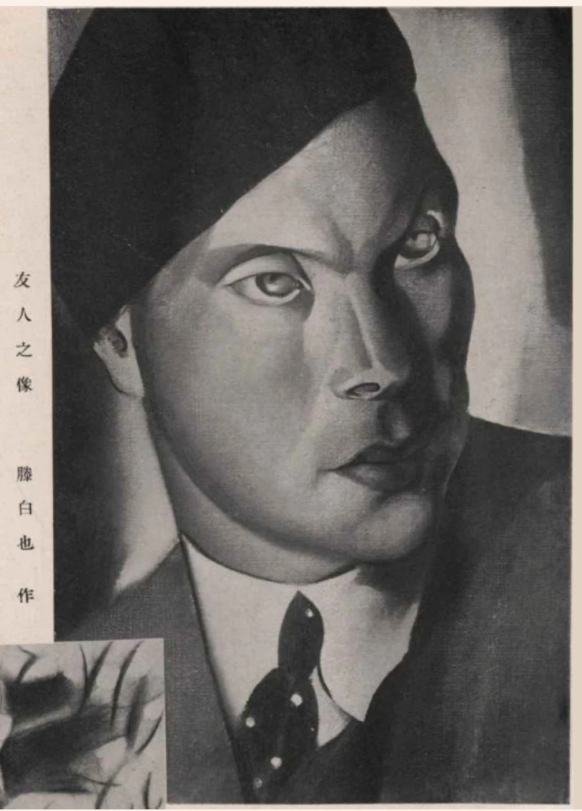

2026-11-08 · 原件、书目与图像核验Originals, bibliography and image verification
儿童读物与绘画新资料Children’s books and newly supplied paintings
七张原图逐一对应作品、书页与馆藏记录；另列Zhen Cheng的2020年课程论文书目与核验说明，论文全文不公开。Seven supplied images are matched to works, book pages and collection records. Bibliographic notes on Zhen Cheng’s 2020 course paper accompany the corrections; its full text is not published here.
题名与2020年论文图8相同。戊午在通常采用的生年范围内可对应1918或1978；不凭论文中的编排位置将其断为晚年作品。The image matches figure 8 of the 2020 essay. Wuwu can refer to 1918 or 1978 within the commonly cited lifespan. Its placement in the essay does not settle the date.
与既有图版同物；递藏待核Same work as the existing plate; provenance unresolved
新照片与I176构图一致，合并为W017的另一视图。黄葆戉题跋末署丁酉四月，即1957年农历四月；作画、题跋和入藏是三件不同事件。《富春江歌》是否同作、1944年赠画说及确切入藏时间仍待图录与递藏档案。The photograph matches I176 and is linked to W017. Huang Baoyue’s inscription dates to the fourth lunar month of 1957. Painting, inscription and acquisition are separate events. The alternate title, reported 1944 gift and acquisition date remain unverified.
与《青青和凤蝶》实物照片I246相同。版权页明确署滕白也著、绘图，赵白山装帧；1956年8月第一版、第一次印刷。论文写成“青青与凤蝶”、1957年，应订正。This is the same plate as I246 in Qingqing and the Swallowtail Butterfly. The colophon credits Teng with text and illustrations, Zhao Baishan with design, and dates the first edition/printing to August 1956. The essay’s title and 1957 date are corrected.
蜻蜓、螳螂和木叶蝶彩页Dragonfly, praying mantis and leaf butterfly
同书另一彩页Another plate in the same book
图下注名保留原文；图像与《青青和凤蝶》实物照片I249相同。两张彩页归入同一本书，不另立两件独立绘画作品。The printed insect caption is preserved. The plate matches I249 in the same book. Both images belong to one publication record; they are not catalogued as two independent paintings.
封面署“滕白也编著”“少年儿童出版社”。藁城图书馆两条书目均记上海、1956年、44页、插图、19厘米。封面没有绘图署名，尚不能确认封面和插图的作者；具体月份及印次也待版权页。The cover credits Teng Baiye with compilation/writing and names the publisher. Two library records list Shanghai, 1956, 44 illustrated pages, 19 cm. The cover does not establish who drew the cover or illustrations; the colophon is still needed.
1935年上海商务印书馆出版；Ruth Hsü编选、英译，Teng Kuei绘图。上传页清楚显示页码73和The Herdsboy’s Song，并与论文图5相同。尚未取得另一份原书该页；“牧童之歌”是图题／歌谣题，不是单独书名。Published by Commercial Press, Shanghai, in 1935, compiled and translated by Ruth Hsü, with illustrations by Teng Kuei. The supplied page clearly shows page 73 and The Herdsboy’s Song and matches figure 5 of the essay. An independent original-page scan remains unlocated.
与馆方年报及旧图版对应Matched to museum report and existing images
三只鹤、松干及题款位置与I157、I016右幅对应。弗莱美术馆2014年报印页15刊同画局部，记1949年前、包铭新收藏。该收藏信息仅代表2014年的著录。The cranes, pine trunk and inscription match I157 and the right-hand work in I016. The Frye’s 2014 annual report, printed page 15, dates it before 1949 and credits Bao Mingxin’s collection. That is a historical credit, not proof of present ownership.
再识滕白也：保留原稿，附核验Re-discovering Teng Baiye: original and verification
Zhen Cheng，ARTH 6818 Modern Chinese Art课程期末论文，2020年6月1日，22页。它是未刊课程论文，本站不公开论文全文；相关核验说明区分原文推断与独立证据。Zhen Cheng, final paper for ARTH 6818 Modern Chinese Art, 1 June 2020, 22 pages. This is an unpublished course paper. The full text is not published here. Its interpretations are distinguished from independently verified evidence.
从论文继续追查Following the paper’s leads
《友人之像》转载图可读“滕白也作”；已登记W114。1934年《美术杂志》第2期第29页的原版仍待取得。CiNii提供2024年影印本的具体馆藏位置。The reproduced Portrait of a Friend is visibly credited to Teng and is recorded as W114. The original 1934 issue 2, page 29 remains unlocated; CiNii identifies a holding of the 2024 facsimile.S315
1933年《Art in Modern China》可核第47卷、第8期／总927期，页479–494；1934年《Bamboo and Bamboo Painting》已保存第65卷原文55–61页及图版。Art in Modern China is verified as volume 47, issue 8/whole number 927, pp. 479–494. The 1934 Bamboo and Bamboo Painting article, volume 65, pp. 55–61, and its plate are now preserved.S018 · S088
“白云”署名的实用艺术稿件、致Yang Xieren信及1957年7月12日《解放日报》仍是原件调阅线索，未据转述新增确定事件。The applied-art submissions under Baiyun, the letter to Yang Xieren and the reported 12 July 1957 Jiefang Daily item remain leads requiring originals.
论文中的Mountain Landscape与荷兰国立博物馆W062版画构图相同；哈佛藏本的馆藏号仍未核实，不把两地印本合并为同一实物。The essay’s Mountain Landscape shares the composition of Rijksmuseum print W062. A Harvard accession number remains unverified; impressions in different collections are not merged.

I269 / W114 · 从用户论文第12页提取的转载图；保留左下角叠入的另一图像。I269 / W114 · Reproduction extracted from page 12 of the supplied essay; the image overlap at lower left is preserved.
《沪大周刊》属于沪江大学，英文名University of Shanghai；21卷5期第17页仍待原刊。
校名已核；条目待核
S314；S318
《Art in Modern China》卷期
原刊封面及卷题名页确认第47卷（XLVII），第8期／总927期，正文479–494。
原刊已核
S018；D172
《Bamboo and Bamboo Painting》
已保存第65卷正文55–61、对页图版和原刊信息；记录5月3日讲演。
原刊已核
S088；D173
Mountain Landscape藏本
与W062荷兰国立博物馆版画构图相同；未核哈佛馆藏号，不合并不同印本。
构图对应；馆藏待核
S305；S155
《友人之像》
转载图可读题名及“滕白也作”；原刊期页与原作媒材仍待核。
转载署名可读；原刊待核
S305；S315
“同物”仅指图像与既有条目的对应；网页照片不能替代实物鉴定。文献日期、图像署名和原作真伪分别记录。Image matching identifies a correspondence with an existing record; it does not replace examination of the physical object. Documentary dates, image credits and authenticity are separate questions.